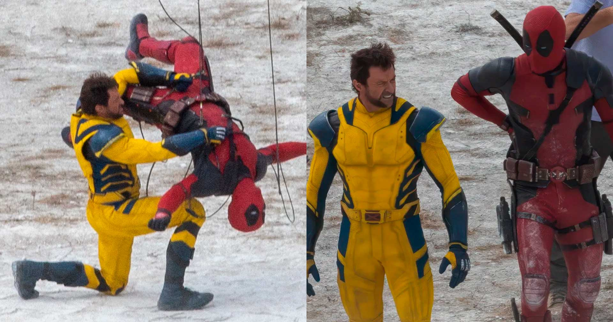
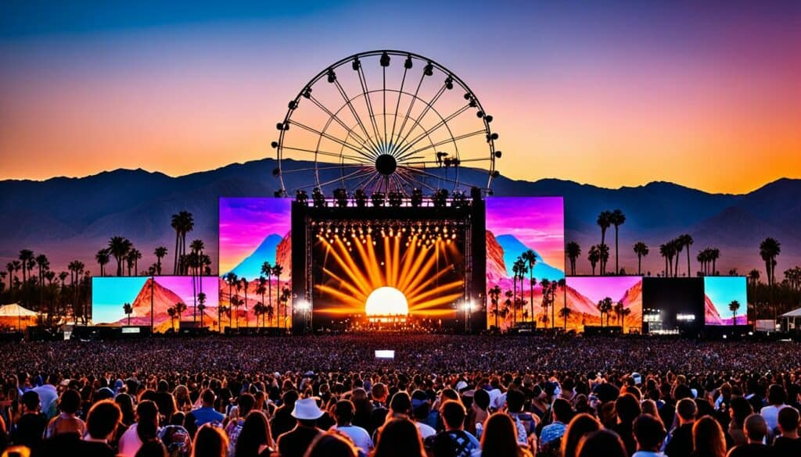
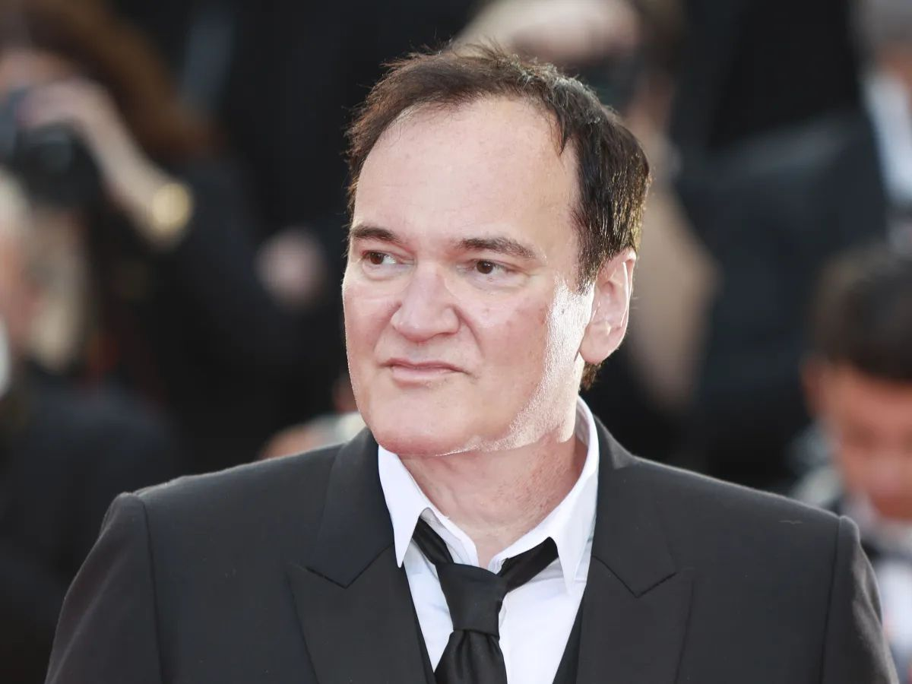

Novo Filme de Super-heróis da Marvel, Deadpool 3, Promete Explorar o Multiverso
A Marvel está prestes a lançar Deadpool 3, que promete uma nova exploração do multiverso com a presença de personagens icônicos, como Wolverine, vivido por Hugh Jackman. O filme combina o humor de Deadpool com o estilo clássico de ação da Marvel, deixando os fãs ansiosos por um dos lançamentos mais aguardados do estúdio.
Ler mais
Netflix Anuncia Série Baseada no Bestseller A Noiva do Tradutor, de Julia Quinn
A Netflix anunciou a produção de uma nova série baseada no livro A Noiva do Tradutor, de Julia Quinn, autora da série de sucesso Bridgerton. A produção buscará capturar a essência romântica e dramática do livro, prometendo mais uma adaptação de época que deverá atrair milhões de espectadores.
Ler mais
Beyoncé Lança o Álbum Visual Renaissance, com Participação de Ícones da Moda
Beyoncé surpreendeu os fãs ao lançar Renaissance, um álbum visual que une música e moda em colaborações com estilistas renomados, como Balmain e Gucci. O projeto explora o estilo e a expressão pessoal da artista, oferecendo uma experiência visual que redefine o conceito de álbuns visuais.
Ler mais

Coachella 2024 Confirma Comeback de Rihanna como Headliner do Festival
Depois de vários anos, Rihanna será a atração principal do Coachella 2024, um dos maiores festivais de música dos Estados Unidos. A artista fará seu retorno aos palcos com um show inédito, misturando sucessos antigos e músicas de seu álbum mais recente, marcando um momento histórico no festival.
Ler mais

Quentin Tarantino Confirma Sequência de Pulp Fiction com Elenco Original
O diretor Quentin Tarantino anunciou a sequência de seu clássico Pulp Fiction, trazendo de volta atores icônicos como Samuel L. Jackson e Uma Thurman. A sequência deve manter o estilo único de narrativa do primeiro filme, mas explorará novas tramas e personagens no universo caótico e estilizado de Tarantino.
Ler mais
Pedro Pascal Protagonizará Adaptação de The Last of Us para o Cinema
Pedro Pascal, que recentemente estrelou a série The Last of Us, foi confirmado no papel principal da nova adaptação cinematográfica do famoso jogo. A produção tem um grande orçamento e promete trazer cenas de ação emocionantes e uma narrativa fiel ao jogo original, atendendo a expectativas de fãs e novos públicos.
Ler mais
.png) N7<NEWS/>
N7<NEWS/>